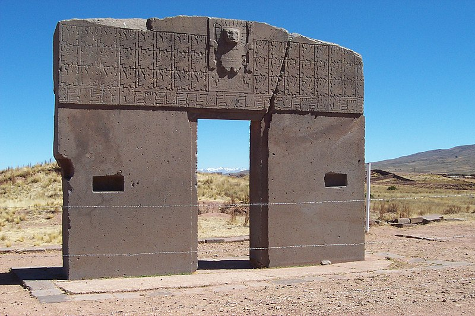

Patrimonio cultutal de la humanidad

El año 1999, el gobierno boliviano postuló para que Tiwanaku sea declarado por la Organización de las Naciones Unidas para la Educación, la Ciencia y la Cultura (UNESCO) como
un Patrimonio Cultural de la Humanidad.
Los argumentos del Viceministerio de Cultura de Bolivia fueron los siguientes:
- Es el símbolo de la nacionalidad boliviana: Bolivia es el heredero de este imperio.
- Tiene importancia en Sudamérica: durante aproximadamente 3000 años, tuvo gran importancia en el desarrollo cultural de los territorios de Perú, Chile, Argentina y Bolivia.
- Tiene importancia en Sudamérica: durante aproximadamente 3000 años, tuvo gran importancia en el desarrollo cultural de los territorios de Perú, Chile, Argentina y Bolivia.
- Tiene importancia a nivel mundial: investigadores de todo el mundo descubren importantes características de la cultura y sociedad de Tiwanaku, con gran influencia mundial.
- Tiene importancia turística: es una gran atracción para Bolivia y el continente.
- Contribución a la humanidad: una de sus máximas contribuciones fue "la papa" y su sistema de agricultura en camellones.
- Estado actual de conservación: dada su importancia urge su preservación y conservación.
- Comparación con otros sitios: como el de Teotihuacán.
- Autenticidad de Tiwanaku: su autenticidad es única.
- Porque la sociedad boliviana lo pide: Tiwanaku es un testimonio viviente del milenario origen de la Nación Aimara.
El 2 de diciembre de 2000 la UNESCO inscribe con el nombre de "Tiwanaku: centro espiritual y político de la cultura Tiwanaku" en la lista de Patrimonio Cultural de la Humanidad,
"por el excepcional valor arqueológico y cultural que poseen las ruinas líticas de la ciudad de Tiwanaku, desde donde un grupo humano contribuyó decisivamente en la investigación
y desarrollo de tecnologías de construcción, agricultura, crianza de ganado, tejido de fibras vegetales y animales".
El 2019, el Ministerio de Culturas de Bolivia presentó a la UNESCO un Plan Integral de Preservación y Conservación de los bienes arqueológicos y líticos del complejo de Tiahuanaco
con el objetivo de controlar, minimizar daños, revertir efectos y prolongar la esperanza de vida de las estructuras patrimoniales.